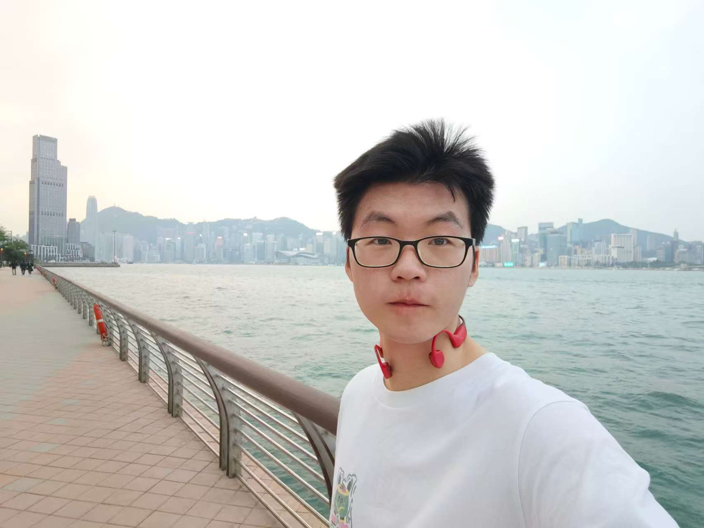
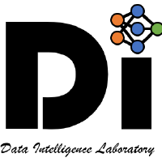

|
I am currently pursuing a PhD degree at the Hong Kong Polytechnic University. My supervisors are Qing Li and Wenqi Fan. My current Cumulative GPA is 3.60/4.00. I studied at Sichuan University (SCU) from 2020 to 2024, where I majored in Computer Science & Technology. My Major GPA (CS courses): 3.79/4, 89.39/100; Overall GPA: 3.78/4, 89.25/100 During my time at Sichuan University, I worked as a research assistant at MachineILab from 2022 to 2024, advised by Prof. JiZhe Zhou. I participated in one National Natural Science Foundation of China project and one National Key R&D Program of China. Email / CV / Google Scholar / Github |
 |
{kind=link}
|
My research interests lie in large language models (LLMs), retrieval-augmented generation (RAG), and Recommender Systems (RecSys). I focus on both theoretical foundations and practical applications of LLM-based systems. My previous research was primarily focused on topics within computer vision, such as tampering detection and object recognition tasks. I have contributed to the design of high-impact benchmarks, such as HiBench, and comprehensive surveys like WebAgents. My work has been published in top-tier conferences, including NeurIPS 2024 (spotlight) and AAAI 2025, and has accumulated 100+ citations, with an h-index of 4. |
|
|
|
🏆2026-04 - Our paper SUPERGLASSES was accepted by CVPR 2026 Findings! 🎉 💼 2025-10 - Will join Kuaishou E-commerce Team as a research intern. 📝 2025-09 - Appointed as Topic Coordinator for Frontiers in Artificial Intelligence (Impact Factor: 4.7, CiteScore: 7.3, Logic and Reasoning Section) and Frontiers in Big Data (Impact Factor: 2.3, CiteScore: 6.1). 🏆 2025-08-20 - Our work QA-Dragon was accepted by KDD 2025 Workshop for Multimodal Retrieval Augmented Generation. 🎤 2025-08-07 - Invited to give a talk "Understanding Hierarchical Data with Large Language Models: RAG, Structural Reasoning, and Future Directions" at KDD 2025 Reasoning Day in Toronto, Canada! 🎙️ 🏅 2025-06-18 - Achieved 12th place globally in KDD Cup 2025 - Meta CRAG-MM Multimodal Retrieval Challenge among hundreds of international teams! 🌍 🏆 2025-05-16 - Our benchmark paper HiBench was accepted to KDD Benchmark Track! 🎉 🎉 2025-05-07 - Our survey paper A Survey of WebAgents: Towards Next-Generation AI Agents for Web Automation with Large Foundation Models was accepted to KDD Tutorial Track! 🎊 📜 2025-03-30 - Completed the survey paper A Survey of WebAgents: Towards Next-Generation AI Agents for Web Automation with Large Foundation Models. 📘 2025-03-01 - Completed the HiBench paper and released the code and dataset on GitHub and Hugging Face. 🌟 2025-01-15 - Mesoscopic Insights: Orchestrating Multi-Scale & Hybrid Architecture for Image Manipulation Localization was published in AAAI 2025. 🏆 2024-12-01 - IMDL-BenCo was published in NeurIPS 2024 Benchmark Tracks and received a Spotlight award. 🎓 2024-09-01 - Beginning my pursuit of a PhD degree in Hong Kong PolyU. 🎓 2024-06-26 - Got Outstanding Graduate Award from Sichuan University and Sichuan Province! 🎉 🎓 2024-06-26 - Graduated from Sichuan University with a bachelor's degree. 🛠️ 2024-06-12 - Completed the co-work project IMDLBenCo and finished a paper IMDL-BenCo: A Comprehensive Benchmark and Codebase for Image Manipulation Detection & Localization 🔍 2024-05-24 - Finished a paper Beyond Visual Appearances: Privacy-sensitive Objects Identification via Hybrid Graph Reasoning 📚 2023-08-01 - Participated in NUS Summer School research program at National University of Singapore, completed face recognition project! 🇸🇬 |
|
|
|
Zhuohang Jiang*, Xu Yuan*, Haohao Qu, Shanru Lin, Kanglong Liu, Wenqi Fan, Qing Li The rapid advancement of AI-powered smart glasses, one of the hottest wearable devices, has unlocked new frontiers for multimodal interaction, with Visual Question Answering (VQA) over external knowledge sources emerging as a core application. Existing Vision Language Models (VLMs) adapted to smart glasses are typically trained and evaluated on traditional multimodal datasets; however, these datasets lack the variety and realism needed to reflect smart glasses usage scenarios and diverge from their specific challenges, where accurately identifying the object of interest must precede any external knowledge retrieval. To bridge this gap, we introduce SUPERGLASSES, the first comprehensive VQA benchmark built on real-world data entirely collected by smart glasses devices. SUPERGLASSES comprises 2,422 egocentric image-question pairs spanning 14 image domains and 8 query categories, enriched with full search trajectories and reasoning annotations. We evaluate 26 representative VLMs on this benchmark, revealing significant performance gaps. To address the limitations of existing models, we further propose SUPERLENS, a multimodal smart glasses agent that enables retrieval-augmented answer generation by integrating automatic object detection, query decoupling, and multimodal web search. Our agent achieves state-of-the-art performance, surpassing GPT-4o by 2.19 percent, and highlights the need for task-specific solutions in smart glasses VQA scenarios. |
|
Zhuohang Jiang*, Pangjing Wu*, Xu Yuan*, Wenqi Fan, Qing Li Retrieval-Augmented Generation (RAG) has been introduced to mitigate hallucinations in Multimodal Large Language Models (MLLMs) by incorporating external knowledge into the generation process, and it has become a widely adopted approach for knowledge-intensive Visual Question Answering (VQA). However, existing RAG methods typically retrieve from either text or images in isolation, limiting their ability to address complex queries that require multi-hop reasoning or up-to-date factual knowledge. To address this limitation, we propose QA-Dragon, a Query-Aware Dynamic RAG System for Knowledge-Intensive VQA. Specifically, QA-Dragon introduces a domain router to identify the query's subject domain for domain-specific reasoning, along with a search router that dynamically selects optimal retrieval strategies. By orchestrating both text and image search agents in a hybrid setup, our system supports multimodal, multi-turn, and multi-hop reasoning, enabling it to tackle complex VQA tasks effectively. We evaluate our QA-Dragon on the Meta CRAG-MM Challenge at KDD Cup 2025, where it significantly enhances the reasoning performance of base models under challenging scenarios. Our framework achieves substantial improvements in both answer accuracy and knowledge overlap scores, outperforming baselines by 5.06% on the single-source task, 6.35% on the multi-source task, and 5.03% on the multi-turn task. |
|
Liangbo Ning, Ziran Liang, Zhuohang Jiang, Haohao Qu, Yujuan Ding, Wenqi Fan, Xiao-yong Wei, Shanru Lin, Hui Liu, Philip S. Yu, Qing Li With the advancement of web techniques, they have significantly revolutionized various aspects of people's lives. Despite the importance of the web, many tasks performed on it are repetitive and time-consuming, negatively impacting overall quality of life. To efficiently handle these tedious daily tasks, one of the most promising approaches is to advance autonomous agents based on Artificial Intelligence (AI) techniques, referred to as AI Agents, as they can operate continuously without fatigue or performance degradation. In the context of the web, leveraging AI Agents -- termed WebAgents -- to automatically assist people in handling tedious daily tasks can dramatically enhance productivity and efficiency. Recently, Large Foundation Models (LFMs) containing billions of parameters have exhibited human-like language understanding and reasoning capabilities, showing proficiency in performing various complex tasks. This naturally raises the question: `Can LFMs be utilized to develop powerful AI Agents that automatically handle web tasks, providing significant convenience to users?' To fully explore the potential of LFMs, extensive research has emerged on WebAgents designed to complete daily web tasks according to user instructions, significantly enhancing the convenience of daily human life. In this survey, we comprehensively review existing research studies on WebAgents across three key aspects: architectures, training, and trustworthiness. Additionally, several promising directions for future research are explored to provide deeper insights. |
|
Zhuohang Jiang*, Pangjing Wu*, Ziran Liang*, Peter Q. Chen*, Xu Yuan*, Ye Jia*, Jiancheng Tu*, Chen Li, Peter H.F. Ng, Qing Li Structure reasoning is a fundamental capability of large language models (LLMs), enabling them to reason about structured commonsense and answer multi-hop questions. However, existing benchmarks for structure reasoning mainly focus on horizontal and coordinate structures (\emph{e.g.} graphs), overlooking the hierarchical relationships within them. Hierarchical structure reasoning is crucial for human cognition, particularly in memory organization and problem-solving. It also plays a key role in various real-world tasks, such as information extraction and decision-making. To address this gap, we propose HiBench, the first framework spanning from initial structure generation to final proficiency assessment, designed to benchmark the hierarchical reasoning capabilities of LLMs systematically. HiBench encompasses six representative scenarios, covering both fundamental and practical aspects, and consists of 30 tasks with varying hierarchical complexity, totaling 39,519 queries. To evaluate LLMs comprehensively, we develop five capability dimensions that depict different facets of hierarchical structure understanding. Through extensive evaluation of 20 LLMs from 10 model families, we reveal key insights into their capabilities and limitations: 1) existing LLMs show proficiency in basic hierarchical reasoning tasks; 2) they still struggle with more complex structures and implicit hierarchical representations, especially in structural modification and textual reasoning. Based on these findings, we create a small yet well-designed instruction dataset, which enhances LLMs' performance on HiBench by an average of 88.84% (Llama-3.1-8B) and 31.38% (Qwen2.5-7B) across all tasks. The HiBench dataset and toolkit are available here, this https URL, to encourage evaluation. |
|
Xuekang Zhu, Xiaochen Ma, Lei Su, Zhuohang Jiang, Bo Du, Xiwen Wang, Zeyu Lei, Wentao Feng, Chi-Man Pun, Jizhe Zhou The mesoscopic level serves as a bridge between the macroscopic and microscopic worlds, addressing gaps overlooked by both. Image manipulation localization (IML), a crucial technique to pursue truth from fake images, has long relied on low-level (microscopic-level) traces. However, in practice, most tampering aims to deceive the audience by altering image semantics. As a result, manipulation commonly occurs at the object level (macroscopic level), which is equally important as microscopic traces. Therefore, integrating these two levels into the mesoscopic level presents a new perspective for IML research. Inspired by this, our paper explores how to simultaneously construct mesoscopic representations of micro and macro information for IML and introduces the Mesorch architecture to orchestrate both. Specifically, this architecture i) combines Transformers and CNNs in parallel, with Transformers extracting macro information and CNNs capturing micro details, and ii) explores across different scales, assessing micro and macro information seamlessly. Additionally, based on the Mesorch architecture, the paper introduces two baseline models aimed at solving IML tasks through mesoscopic representation. Extensive experiments across four datasets have demonstrated that our models surpass the current state-of-the-art in terms of performance, computational complexity, and robustness. |
|
Xiaochen Ma*, Xuekang Zhu*, Lei Su*, Bo Du*, Zhuohang Jiang*, Bingkui Tong*, Zeyu Lei*, Xinyu Yang*, Chi-Man Pun, Jiancheng Lv, Jizhe Zhou A comprehensive benchmark is yet to be established in the Image Manipulation Detection & Localization (IMDL) field. The absence of such a benchmark leads to insufficient and misleading model evaluations, severely undermining the development of this field. However, the scarcity of open-sourced baseline models and inconsistent training and evaluation protocols make conducting rigorous experiments and faithful comparisons among IMDL models challenging. To address these challenges, we introduce IMDL-BenCo, the first comprehensive IMDL benchmark and modular codebase. IMDL-BenCo:i) decomposes the IMDL framework into standardized, reusable components and revises the model construction pipeline, improving coding efficiency and customization flexibility;ii) fully implements or incorporates training code for state-of-the-art models to establish a comprehensive IMDL benchmark; and iii) conducts deep analysis based on the established benchmark and codebase, offering new insights into IMDL model architecture, dataset characteristics, and evaluation standards. Specifically, IMDL-BenCo includes common processing algorithms, 8 state-of-the-art IMDL models (1 of which are reproduced from scratch), 2 sets of standard training and evaluation protocols, 15 GPU-accelerated evaluation metrics, and 3 kinds of robustness evaluation. This benchmark and codebase represent a significant leap forward in calibrating the current progress in the IMDL field and inspiring future breakthroughs. |
|
Zhuohang Jiang*, Bingkui Tong*, Xia Du, Ahmed Alhammadi, Jizhe Zhou Zhuohang Jiang*, Bingkui Tong*, Xia Du, Ahmed Alhammadi, Jizhe Zhou To explicitly derive the objects' privacy class from the scene contexts, in this paper, we interpret the POI task as a visual reasoning task aimed at the privacy of each object in the scene. Following this interpretation, we propose the PrivacyGuard framework for POI. PrivacyGuard contains three stages. i) Structuring: an unstructured image is first converted into a structured, heterogeneous scene graph that embeds rich scene contexts. ii) Data Augmentation: a contextual perturbation oversampling strategy is proposed to create slightly perturbed privacy-sensitive objects in a scene graph, thereby balancing the skewed distribution of privacy classes. iii) Hybrid Graph Generation & Reasoning: the balanced, heterogeneous scene graph is then transformed into a hybrid graph by endowing it with extra "node-node" and "edge-edge" homogeneous paths. These homogeneous paths allow direct message passing between nodes or edges, thereby accelerating reasoning and facilitating the capturing of subtle context changes. |
|
|
|
First Author & Team Leader • KDD 2025 Benchmark Track • 2025
Designed and developed the first comprehensive benchmark for evaluating LLMs' capability on
hierarchical structure reasoning.
The benchmark encompasses six representative scenarios with 39,519 queries across varying
hierarchical complexity.
Key contributions: (1) Led the architectural design and implementation of the
evaluation framework,
(2) Coordinated a multi-institutional team across different time zones, (3) Open-sourced the
complete toolkit
including dataset, evaluation metrics, and baseline implementations. The benchmark has been
accepted
as an
oral presentation at KDD 2025 and is being adopted by multiple research groups
for
hierarchical reasoning evaluation.
|
|
Team Leader • KDD Cup 2025 • 2025
Led a team to achieve 12th place globally among hundreds of international teams
in
the Meta CRAG-MM
Multimodal Retrieval Challenge. Key contributions: (1) Designed novel multimodal
fusion architectures
combining vision and language understanding, (2) Implemented efficient retrieval-augmented
generation pipelines,
(3) Coordinated team efforts in model development, hyperparameter optimization, and submission
strategies.
The challenge focused on developing AI systems capable of understanding and retrieving information
from
multimodal content, which aligns with current trends in large multimodal models.
|
|
Co-First Author • NeurIPS 2024 Benchmark Track — Spotlight • 2024
Developed the first comprehensive benchmark and codebase for Image Manipulation Detection &
Localization (IMDL).
Key contributions: (1) Implemented GPU-accelerated evaluation metrics for fair
and
efficient comparison,
(2) Designed modular codebase architecture enabling easy customization and extension, (3)
Co-authored the manuscript
that received a Spotlight Award at NeurIPS 2024. The benchmark includes 8
state-of-the-art models,
15 evaluation metrics, and comprehensive robustness evaluation protocols, significantly advancing
the field's
standardization and reproducibility.
|
|
|
|
Invited Talks • Reasoning Day @ KDD 2025 • Toronto, ON, Canada • Aug 2025
Invited to deliver a presentation at the prestigious KDD 2025 Reasoning Day workshop.
The talk will explore cutting-edge developments in leveraging Large Language Models for hierarchical data understanding, with particular focus on Retrieval-Augmented Generation (RAG) systems and structural reasoning capabilities. Key topics: (1) Novel approaches to hierarchical data representation in LLM contexts, (2) Integration of structural reasoning with retrieval-augmented generation, (3) Future research directions in reasoning-enhanced AI systems, (4) Practical applications and deployment considerations for hierarchical reasoning in real-world scenarios. This invitation recognizes the impact of our HiBench work and positions our research at the forefront of LLM reasoning capabilities. |
|
|
|
Sichuan University, Chengdu, Sichuan, China
B.E. in Computer Science and Technology • Sep. 2020 to Jun. 2024 |
|
Hong Kong Polytechnic University, Hongkong, China
PHD. in Computer Science and Technology • Sep. 2024 to Present |
|
|
|
National University of Singapore (NUS)
Summer School Participant • Aug. 2023 • Participated in intensive research program at School of Computing • Completed face recognition project using CNN-based feature extraction and similarity matching • Gained international research experience and cross-cultural collaboration skills |
|
DICALab, Sichuan University
Research Assistant • Sep. 2022 to Jun. 2024 Advisor: Prof. JiZhe Zhou • Developed graph-based frameworks for privacy-sensitive object detection • Participated in National Natural Science Foundation of China project • Contributed to National Key R&D Program of China • Co-authored multiple publications in top-tier conferences and journals |
 |
|
Kuaishou E-commerce Team, Kuaishou Inc.
Research Intern • Oct. 2025 to Present Beijing, China • Conducted end-to-end recommendation research based on large language models |
|
|
|
|
KDD Cup 2025 — Meta CRAG-MM Toronto, Canada, 2025 |
12th Place (Global) |
|
NeurIPS 2024 — IMDL‑BenCo (Co‑first Author) Vancouver, Canada, 2024 |
Spotlight Award |
|
Outstanding Graduate Sichuan University & Sichuan Province, 2024 |
Top Achievement |
|
Tencent Scholarship Sichuan University, China, 2023 |
Top 2% |
|
A-Level Certificate Comprehensive Quality Evaluation, China, 2023 |
Excellence |
|
Comprehensive First Class Scholarship Sichuan University, Sichuan, China, 2022 |
Top 1% |
|
Outstanding Students of Sichuan University Sichuan University, Sichuan, China, 2022 |
Top 5% |
|
|
|
|
Conference & Journal Reviewer 2023-2025 |
TIP, ECCV, NeurIPS, KDD, AAAI, IoTJ, |
|
Conference & Journal Topic Coordinator 2025-2026 |
Frontiers in Artificial Intelligence, Frontiers in Big Data |
|
Teaching Assistant The Hong Kong Polytechnic University (PolyU) |
Artificial Intelligence (COMP4431) NLP Practicum (COMP5423) DataBase System (COMP2411) |
|
|
|
| Research Topics | Large Language Models (LLMs), Retrieval‑Augmented Generation (RAG), Recommender Systems (RecSys) |
| Frameworks & Tools | PyTorch, Hugging Face, NumPy, Docker, Git, Anaconda |
| Languages | Mandarin (native), English (fluent, IELTS 6.5) |

|
Updated at Sep. 2025
Thanks Jon Barron for this amazing template
|